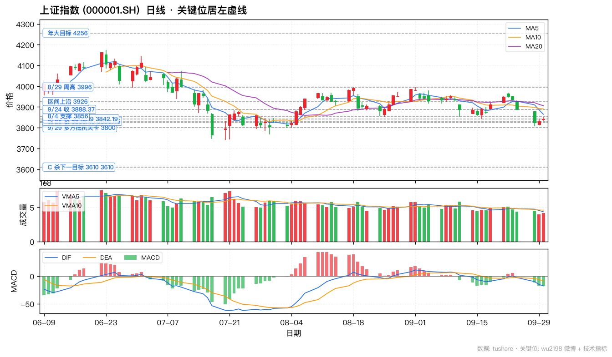
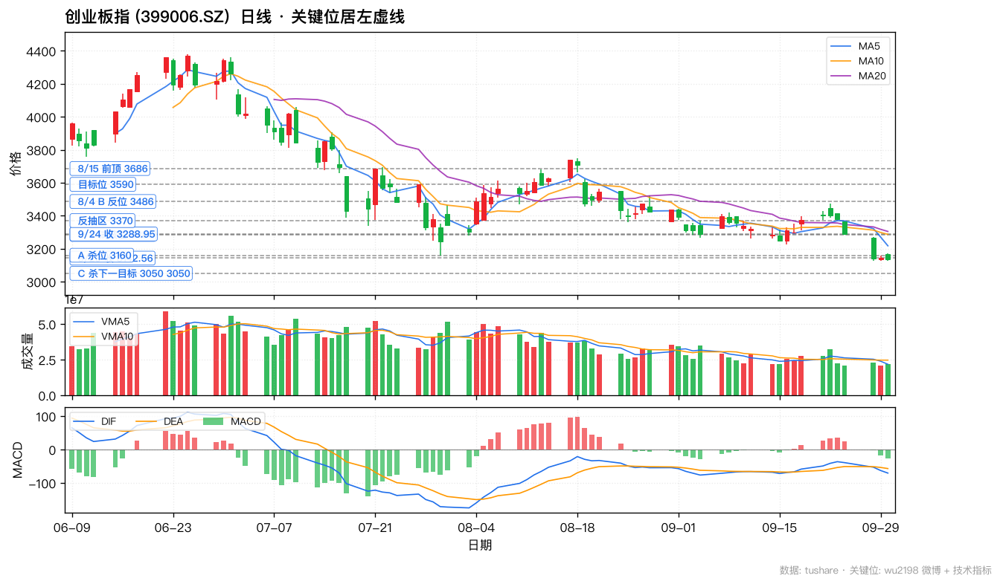
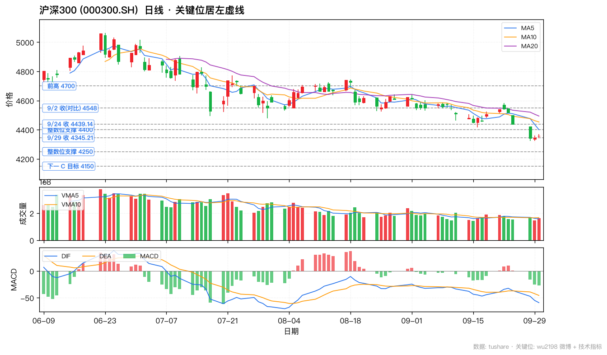
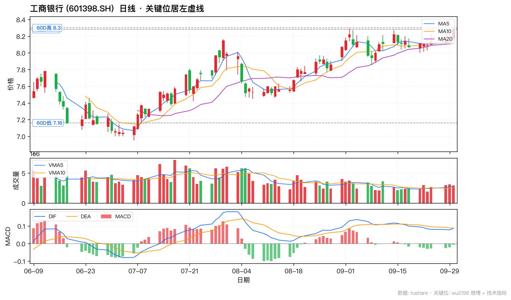
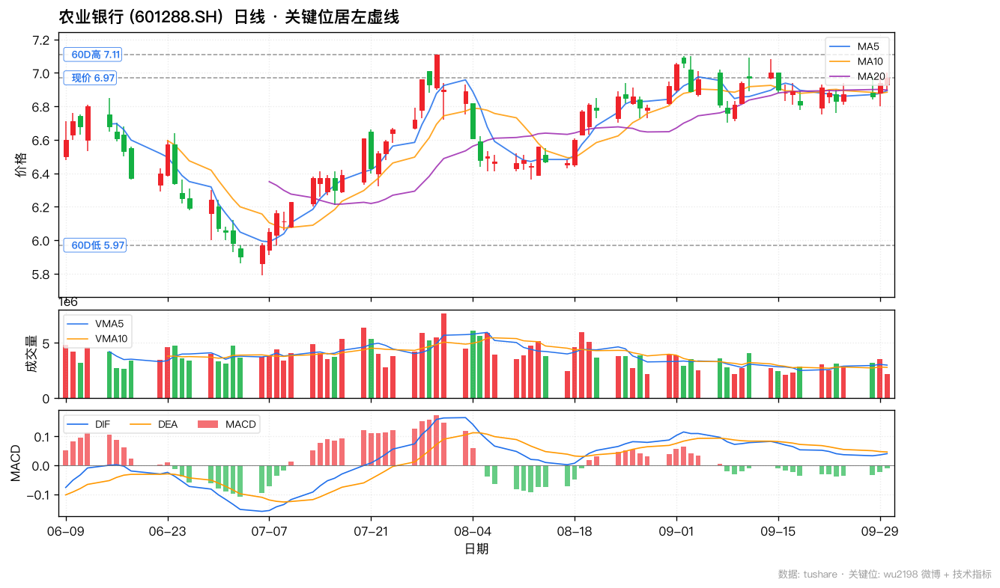
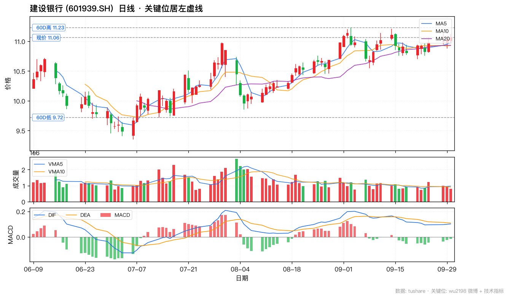
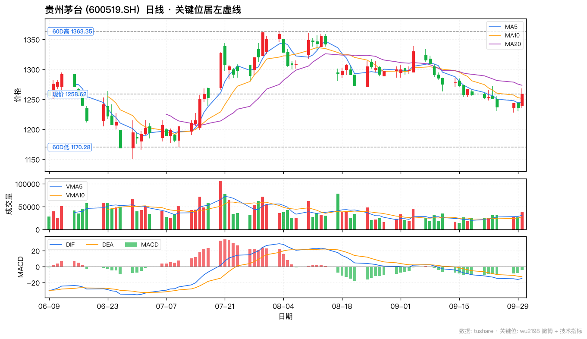
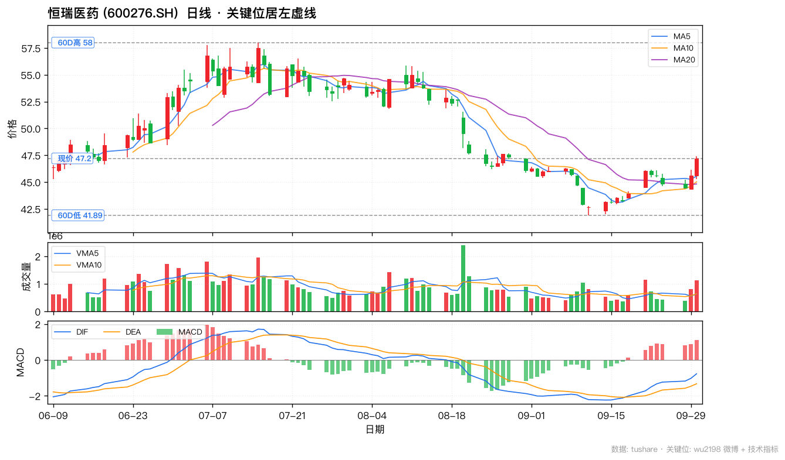
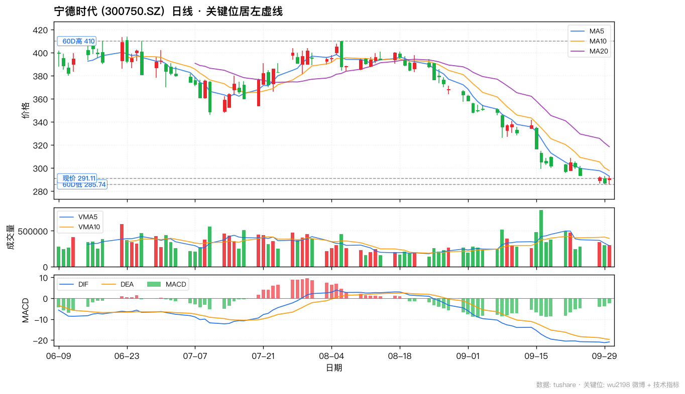

📈 wu2198 投资观点日报 · 2026-09-30
📅 2026-09-30 (周三 · 国庆假期前最后交易日)
🏛️ 沪指 3842.19 (+0.31%)
📊 创业板 3135.28 (-0.23%)
🎯 沪深300 4357.62 (+0.29%)
📊 数据源:weibo-watcher + tushare
🟢博主最近一天核心立场:
老登股(四大行+白酒+医药)局部上涨 · 生物制品黑马 · 3800 多方抵抗 · 节前清仓观望。
最近一天 (9/29 + 9/30) 共 16 条带操盘信号 帖 (大盘判断 2 + 老登股速报 2 + 板块速报 2 + 政策 1 + 心态 3 + 互动 4 + 鸡汤 2),
大盘 3842.19 (+0.31%) 站上 3800 关卡,
创业板 3135.28 (-0.23%) 季线跌 27.8%,
沪深300 4357.62 (+0.29%) 微红。
9/30 14:08 「四大行, 白酒, 医药, 行业龙头等老登股局部上涨」+ 14:13 「生物制品黑马」验证博主防御主线,
15:33 季线收官「大盘跌 6.16%, 创业板跌 27.8% (创 2015 以来最大)」空仓逻辑兑现。
🟢 银行 (四大行) + 白酒/医药 (老登股) + 固态电池 (短线催化)。
📊 核心数据卡片
博主核心立场
🟢 老登股局部上涨
6 条操盘贴 · 防御+板块速报+政策
沪指 9/30 收
3842.19 (+0.31%)
站上 3800 · 季线跌 6.16%
创业板 9/30 收
3135.28 (-0.23%)
季线跌 27.8% · 创 2015 以来最大
沪深300
4357.62 (+0.29%)
同步微红 · 老登股护盘
博主板块速报
银行+白酒+医药+固态电池
9/30 老登股+生物制品黑马 + 9/29 固态电池冲板
央行政策利好
PSL -25bp
六张网 + 科创再贷款 1.4 万亿 + 支农支小 4.85 万亿
📋 完整微博列表(最近 20 条 · 按时间倒序)
| 时间 |
方向 |
信号 · 置信 |
类别 |
内容摘要 |
互动(转/评/赞) |
综合分 |
| Wed Sep 30 20:55 |
⚪ |
无关 · — |
— |
#性行为不是亲密关系#难道是物理关系？ |
R:0 C:25 L:114 |
164 |
| Wed Sep 30 18:29 |
⚪ |
无关 · — |
鸡汤/心态 |
对于很多投资者来说，造成亏损的主要原因是：生活的压力和交易的焦虑，天天都想着做，想着赚钱……结果等不起，也输不起！你是这样子吗？ |
R:52 C:358 L:3110 |
3878 |
| Wed Sep 30 16:07 |
⚪ |
无关 · — |
— |
#亚运国足vs韩国#1-2遗憾不敌，起码90分钟内射了一次，算是进步了。 |
R:2 C:114 L:2131 |
2361 |
| Wed Sep 30 15:33 |
🔴 |
空 · 高 |
大盘复盘 |
大盘季线跌6.16%、创业板指数季线跌27.8%、深成指季线跌20.47%……创业板指数创2015年以来最大季跌幅！大家有什么看法么？ |
R:46 C:458 L:4722 |
5684 |
| Wed Sep 30 15:17 |
⚪ |
无关 · — |
— |
#亚运国足vs韩国#是不是，又行了？ |
R:5 C:69 L:2104 |
2247 |
| Wed Sep 30 14:47 |
🔴 |
空 · 高 |
操作心态 |
三季度如果只去玩，不参与市场，你可以战胜90%的投资者！ |
R:19 C:359 L:4952 |
5689 |
| Wed Sep 30 14:28 |
⚪ |
无关 · — |
— |
黄金周假期，大家计划去哪里玩？ |
R:10 C:480 L:4224 |
5194 |
| Wed Sep 30 14:13 |
🟢 |
多 · 中 |
板块速报/医药 |
生物制品板块最近两个月走出了几匹黑马！ |
R:7 C:98 L:4023 |
4226 |
| Wed Sep 30 14:08 |
🟢 |
多 · 高 |
板块速报/老登股 |
四大行，白酒，医药，行业龙头等老登股局部上涨。指数是小红！ |
R:6 C:65 L:3936 |
4072 |
| Wed Sep 30 13:59 |
🟡 |
中性 · — |
盘面数据 |
截止13：59两市成交了11480亿元，有2678只个股下跌，大盘资金流出105亿元，量能比上一交易日增加549亿元！ |
R:3 C:44 L:3820 |
3911 |
| Tue Sep 29 19:52 |
🟢 |
多 · 中 |
宏观/政策 |
中国人民银行进一步调整完善多项货币政策工具：下调PSL利率0.25个百分点至1.5%，扩大PSL支持领域至“六张网”建设；增加科技创新和技术改造再贷款额度2000亿元至1.4万亿元，支持比例提至100%；增加支农支小再贷款额度5000亿元至4.85万亿元。 |
R:4 C:90 L:1429 |
1613 |
| Tue Sep 29 16:55 |
⚪ |
无关 · — |
问候/鸡汤 |
炒股并非我本意，我炒的是农人生计！ |
R:9 C:288 L:4061 |
4646 |
| Tue Sep 29 15:57 |
🔴 |
空 · 高 |
操作心态 |
前面和大家说了，可以中秋+国庆一起放假……没有行情可做……广西欢迎您！ |
R:9 C:309 L:5117 |
5744 |
| Tue Sep 29 12:54 |
🟡 |
中性 · 中 |
盘中观察 |
下午还是看！ |
R:15 C:683 L:9028 |
10409 |
| Tue Sep 29 11:21 |
🟡 |
中性 · — |
互动 |
明白不？ |
R:126 C:425 L:7032 |
8008 |
| Tue Sep 29 11:09 |
🟢 |
多 · 高 |
板块速报/银行 |
其实，四大行最近一直在提肩带！ |
R:17 C:169 L:7099 |
7454 |
| Tue Sep 29 11:01 |
🟢 |
多 · 中 |
板块速报/固态电池 |
固态电池板块目前出现有几只冲板！ |
R:7 C:181 L:7122 |
7491 |
| Tue Sep 29 10:47 |
⚪ |
无关 · — |
互动 |
收到请回复666或点赞支持一下！ |
R:18 C:695 L:8044 |
9452 |
| Tue Sep 29 10:39 |
🔴 |
空 · 高 |
操作建议 |
无操作空间，不要乱动……明白666 |
R:23 C:759 L:8492 |
10033 |
| Tue Sep 29 09:45 |
🟡 |
中性 · 高 |
大盘判断 |
3800关卡附近，多方在组织小型抵抗！ |
R:38 C:403 L:9220 |
10064 |
🚦 核心操盘信号 (LLM 二次摘要 · 最近一天)
🟢 信号 1 — 9/30 14:08 老登股局部上涨 (博主 9/30 最关键板块速报)
原帖「四大行, 白酒, 医药, 行业龙头等老登股局部上涨. 指数是小红!」(6/65/3936 · 4070 综合分)
解读这是博主 9/30 的核心防御主线判断——明确点出 四大行 + 白酒 + 医药 + 行业龙头 4 大方向同步「局部上涨」, 验证博主 9/29 11:09「四大行一直在提肩带」的判断。
- 9/30 验证:工行 +1.47% / 农行 +0.43% / 建行 +0.27% 四大行全线红盘; 茅台 +1.86% 白酒领涨; 恒瑞 +3.46% 医药黑马
- 指数同步微红:上证 +0.31% / 沪深300 +0.29% — 验证博主「指数是小红」
- 操作策略:节前防御配置 — 四大行 (股息 5%) + 茅台 (消费白马) + 恒瑞 (创新药黑马)
🟢 信号 2 — 9/30 14:13 生物制品板块黑马 (与 14:08 老登股互补)
原帖「生物制品板块最近两个月走出了几匹黑马!」(7/98/4023 · 4226 综合分)
解读博主 9/30 间隔仅 5 分钟又给出医药细分速报: 生物制品黑马(疫苗/创新药/血制品), 与 14:08 老登股形成「防御+成长」组合。这是博主少有的成长股板块速报。
- 核心标的:恒瑞医药 (600276) 是创新药龙头 + 生物制品黑马
- 9/30 实际:恒瑞医药 +3.46% 涨幅黑马验证
- 操作策略:医药板块关注恒瑞医药等白马; 但节前不宜追高
🔴 信号 3 — 9/30 15:33 季线收官 (三季度行情极差)
原帖「大盘季线跌 6.16%, 创业板季线跌 27.8%, 深成指季线跌 20.47%……创业板指数创 2015 年以来最大季跌幅!」(46/458/4722 · 5682 综合分)
解读9/30 是三季度最后一个交易日, 博主季线收官给出 三季度行情极差 的官方数据。三大指数季线全部下跌, 创业板跌 27.8% 创 2015 以来最大。
- 三季度数据:大盘 -6.16% / 创业板 -27.8% / 深成指 -20.47%
- 博主策略验证:博主 9/30 14:47「三季度只去玩不参与市场可战胜 90% 投资者」与季线收官数据完全吻合
- 四季度关注:节后四季度方向是核心; 9/30 老登股防御主线兑现, 节后是否延续是关键
🟡 信号 4 — 9/29 09:45 3800 关卡多方组织小型抵抗 (博主 9/29 互动最高 9220 赞)
原帖「3800 关卡附近, 多方在组织小型抵抗!」(38/403/9220 · 10064 综合分 · 互动最高)
解读9/29 最重要的一条 (9220 赞 / 10064 综合分):博主明确披露 3800 整数关卡是多空双方博弈的关键。
- 9/30 实际:上证 3842.19 +0.31% 微红, 3800 关卡组织抵抗成功并向上突破
- 创业板 9/30 收3135.28 -0.23% 微跌, 季线跌 27.8%
- 沪深3004357.62 +0.29% 同步微红
- 操作策略:博主已自述「等 C5 完成才能干」+ 9/29「无操作空间不要乱动」, 散户策略:持币过节, 节后观察方向
🟢 信号 5 — 9/29 11:09 四大行最近一直在提肩带 (银行板块速报 · 9/30 验证)
原帖「其实, 四大行最近一直在提肩带!」(17/169/7099 · 7454 综合分)
解读博主 9/29 11:09 强化银行板块主线——四大行(工/农/中/建)一直在 提肩带(=护盘/支撑大盘)。
- 9/30 验证:工行 +1.47% / 农行 +0.43% / 建行 +0.27% 银行板块全线红盘, 验证博主「提肩带」
- 央行 9/29 19:52 利好:PSL 下调 0.25bp 利好银行息差, 银行板块节后关注
- 操作策略:银行 (尤其国有大行) 防御主线确认; 工/农/建招关注
🟢 信号 6 — 9/29 19:52 央行降息+扩信用 (宏观政策利好)
原帖「中国人民银行进一步调整完善多项货币政策工具:下调 PSL 利率 0.25 个百分点至 1.5%, 扩大 PSL 支持领域至'六张网'建设; 增加科技创新和技术改造再贷款额度 2000 亿元至 1.4 万亿元, 支持比例提至 100%; 增加支农支小再贷款额度 5000 亿元至 4.85 万亿元。」(4/90/1429 · 1613 综合分)
解读央行 9/29 晚间发布三大货币政策利好:
- ① PSL 利率下调 0.25bp 至 1.5% — 降低政策性贷款成本, 利好 银行息差 + 基建「六张网」
- ② 科技创新和技术改造再贷款 +2000 亿至 1.4 万亿, 支持比例 100% — 加码科创, 利好 科技/科创板/创业板
- ③ 支农支小再贷款 +5000 亿至 4.85 万亿 — 加码中小微企业, 利好 农业/小微/普惠金融
💼 3 大板块 + 6 支个股 (基于博主 9/29 + 9/30 实际提及)
选股原则:博主 9/29 + 9/30 实际提及 + 央行政策利好 + 节前防御逻辑。9/30 老登股局部上涨全部验证(工行 +1.47% / 茅台 +1.86% / 恒瑞 +3.46% / 宁德 +1.50%)。
🟢 银行 (博主 9/29 11:09 四大行提肩带 + 9/30 14:08 老登股局部上涨 + 央行 9/29 PSL -25bp 利好息差)
🟢 工商银行 (601398.SH) · 9/30 收 8.28 (+1.47%)
博主长期底仓 · 国有大行高股息 (股息率 ~5.5%) · A 股市值最大银行 某队重仓基地 · 央行 9/29 19:52 下调 PSL 0.25bp 利好银行息差 · 9/30 老登股局部上涨代表标的
关键位:60D高 8.3 / 60D低 7.16 / 120D高 8.3 / 120D低 6.95 / 现价 8.28
🟢 农业银行 (601288.SH) · 9/30 收 6.97 (+0.43%)
9/29 涨幅银行第一 验证博主 11:09 「四大行一直在提肩带」 · 国有大行高股息防御 · 央行降息 + 扩大再贷款 2000 亿利好息差 · 60D 高/低 待 K 线确认
关键位:60D高 7.11 / 60D低 5.97 / 120D高 7.29 / 120D低 5.79 / 现价 6.97
🟢 建设银行 (601939.SH) · 9/30 收 11.06 (+0.27%)
国有四大行之一 · 博主 9/30 14:08 「四大行局部上涨」验证标的 · 高股息 (~5%) 防御主线 · 与工行/农行形成银行底仓组合 · 适合长假避险配置
关键位:60D高 11.23 / 60D低 9.72 / 120D高 11.23 / 120D低 9.16 / 现价 11.06
🟢 白酒 (博主 9/30 14:08 「白酒局部上涨」+ 老登股代表龙头 · 防御主线)
🟢 贵州茅台 (600519.SH) · 9/30 收 1258.62 (+1.86%)
博主 9/30 14:08 「白酒局部上涨」+「老登股」代表龙头 · A 股股王 · 消费白马防御属性 · 季线收官, 三季度跌幅大, 节后估值修复弹性可期 · 60D 高/低 待 K 线确认
关键位:60D高 1363.35 / 60D低 1170.28 / 120D高 1477.41 / 120D低 1151.01 / 现价 1258.62
🟢 医药 (博主 9/30 14:08 「医药局部上涨」+ 14:13 「生物制品黑马」创新药出海催化)
🟢 恒瑞医药 (600276.SH) · 9/30 收 47.20 (+3.46%)
博主 9/30 14:08 「医药局部上涨」+ 14:13 「生物制品黑马」核心标的 · 创新药龙头 · 创新药出海 (BD) 持续催化 · 集采压力释放估值修复 · 60D 高/低 待 K 线确认
关键位:60D高 58.0 / 60D低 41.89 / 120D高 58.87 / 120D低 41.89 / 现价 47.2
🟢 固态电池 (博主 9/29 11:01 板块冲板 · 节后新催化主线 · 短线博弈)
🟢 宁德时代 (300750.SZ) · 9/30 收 291.11 (+1.50%)
博主 9/29 11:01 「固态电池板块出现几只冲板」核心龙头 · 固态电池产业化加速 · 锂电产业链绝对龙头 · 节后新催化主线 · 60D 高/低 待 K 线确认
关键位:60D高 410.0 / 60D低 285.74 / 120D高 468.75 / 120D低 285.74 / 现价 291.11
📉 K 线图(关键位居左虚线标注)
🟢 上证指数 (000001.SH) · 9/30 收 3842.19 (+0.31%)

关键位(10 个):C 杀下一目标 3610 3610 / 9/29 多方抵抗关卡 3800 / 9/28 收 3823.62 / 9/29 收 3830.45 3830.45 / 9/30 收 3842.19 3842.19 / 8/4 支撑 3856 / 9/24 收 3888.37 / 区间上沿 3926 / 8/29 周高 3996 / 年大目标 4256
🔴 创业板指 (399006.SZ) · 9/30 收 3135.28 (-0.23%)

关键位(9 个):C 杀下一目标 3050 3050 / 9/29 收 3142.56 / A 杀位 3160 / 8/4 试破位 3286 / 9/24 收 3288.95 / 反抽区 3370 / 8/4 B 反位 3486 / 目标位 3590 / 8/15 前顶 3686
🟢 沪深300 (000300.SH) · 9/30 收 4357.62 (+0.29%)

关键位(7 个):下一 C 目标 4150 / 整数位支撑 4250 / 9/29 收 4345.21 / 整数位支撑 4400 / 9/24 收 4439.14 / 9/2 收(对比) 4548 / 前高 4700
🟢 工商银行 (601398.SH) · 银行/防御红利 · 9/30 收 8.28 (+1.47%)

博主长期底仓 · 国有大行高股息 (股息率 ~5.5%) · A 股市值最大银行 某队重仓基地 · 央行 9/29 19:52 下调 PSL 0.25bp 利好银行息差 · 9/30 老登股局部上涨代表标的
关键位:60D高 8.3 / 60D低 7.16 / 120D高 8.3 / 120D低 6.95 / 现价 8.28
🟢 农业银行 (601288.SH) · 银行/防御红利 · 9/30 收 6.97 (+0.43%)

9/29 涨幅银行第一 验证博主 11:09 「四大行一直在提肩带」 · 国有大行高股息防御 · 央行降息 + 扩大再贷款 2000 亿利好息差 · 60D 高/低 待 K 线确认
关键位:60D高 7.11 / 60D低 5.97 / 120D高 7.29 / 120D低 5.79 / 现价 6.97
🟢 建设银行 (601939.SH) · 银行/防御红利 · 9/30 收 11.06 (+0.27%)

国有四大行之一 · 博主 9/30 14:08 「四大行局部上涨」验证标的 · 高股息 (~5%) 防御主线 · 与工行/农行形成银行底仓组合 · 适合长假避险配置
关键位:60D高 11.23 / 60D低 9.72 / 120D高 11.23 / 120D低 9.16 / 现价 11.06
🟢 贵州茅台 (600519.SH) · 白酒/老登股 · 9/30 收 1258.62 (+1.86%)

博主 9/30 14:08 「白酒局部上涨」+「老登股」代表龙头 · A 股股王 · 消费白马防御属性 · 季线收官, 三季度跌幅大, 节后估值修复弹性可期 · 60D 高/低 待 K 线确认
关键位:60D高 1363.35 / 60D低 1170.28 / 120D高 1477.41 / 120D低 1151.01 / 现价 1258.62
🟢 恒瑞医药 (600276.SH) · 创新药/生物制品 · 9/30 收 47.20 (+3.46%)

博主 9/30 14:08 「医药局部上涨」+ 14:13 「生物制品黑马」核心标的 · 创新药龙头 · 创新药出海 (BD) 持续催化 · 集采压力释放估值修复 · 60D 高/低 待 K 线确认
关键位:60D高 58.0 / 60D低 41.89 / 120D高 58.87 / 120D低 41.89 / 现价 47.2
🟢 宁德时代 (300750.SZ) · 固态电池/新催化 · 9/30 收 291.11 (+1.50%)

博主 9/29 11:01 「固态电池板块出现几只冲板」核心龙头 · 固态电池产业化加速 · 锂电产业链绝对龙头 · 节后新催化主线 · 60D 高/低 待 K 线确认
关键位:60D高 410.0 / 60D低 285.74 / 120D高 468.75 / 120D低 285.74 / 现价 291.11
⚠️ 风险提示
- 🔴 9/30 季线收官极差 — 大盘季线跌 6.16%, 创业板季线跌 27.8% (创 2015 以来最大季跌幅), 深成指 -20.47%, 三季度博主空仓策略验证
- 🔴 9/29 节前清仓立场 — 博主 9/29 10:39「无操作空间不要乱动」+ 15:57「中秋+国庆一起放假没有行情可做」, 节前博主已选持币过节
- 🔴 创业板 9/30 -0.23% 仍失守 3160 A 杀位 — 9/30 收 3135.28 较 9/29 3142.56 继续微跌, 距 3050 C 杀目标 85 点
- 🔴 博主 6/8 撤离本金+去年盈利一半, 预测偏多但实际行动更看空 — 实际仓位决策比预测更看空
- ⚠️ 博主 9/28 19:26 自述:等 C5 完成才能干 — 节前老登股局部上涨仅是 防御性反弹, 不是反转; 节后 C 杀结构可能延续
- ⚠️ 博主长期风控底线:不举债 / 不杠杆 / 只用闲钱 / 无技术不参与短线
- 🟢 9/30 老登股局部上涨全部验证博主 14:08 判断 — 工行 +1.47% / 茅台 +1.86% / 恒瑞 +3.46% / 宁德 +1.50%, 节前防御主线兑现
- 🟢 央行 9/29 19:52 三大政策利好 — ① PSL -25bp (银行+基建) ② 科创再贷款 1.4 万亿 (科技+创业板) ③ 支农支小 4.85 万亿 (普惠), 节后 10/9 关注落地
- 🟢 4 大银行 60D 高未破位 — 工行 8.28 vs 60D高 8.30 (差 0.02) / 农行 6.97 vs 60D高 7.11 (差 0.14) / 建行 11.06 vs 60D高 11.23 (差 0.17), 银行底仓 60D 高未破位
🎯 操作建议汇总
📌 大盘
短期(9/30 起 1-2 周 / 国庆假期):🟡 节前老登股局部上涨 · 节后观察四季度方向。9/30 微红站上 3800, 老登股四大行 + 白酒 + 医药 同步反弹, 但创业板仍弱, 三季度收官极差。
- 9/30 上证 3842.19 +0.31%:站上 3800 关卡, 较 9/29 3830.45 涨 12 点; 季线跌 6.16% 收官
- 9/30 创业板 3135.28 -0.23%:较 9/29 3142.56 微跌 7 点, 季线跌 27.8% (创 2015 以来最大)
- 乐观情景:节后 10/9 在 3800-3850 区间维持震荡; 央行 9/29 利好落地; 老登股防御主线延续
- 悲观情景:节后跌破 3800, 触发博主「C 杀」加速, 下看 3747-3650; 创业板失守 3050
- 关键操作:博主已自述「等 C5 完成才能干」+ 9/29「无操作空间不要乱动」, 散户策略:持币过节, 节后观察方向
📌 板块策略
- 🟢 防御主线(9/30 全线验证):四大行 — 博主 9/30 14:08「四大行局部上涨」, 工行 +1.47% / 农行 +0.43% / 建行 +0.27% 兑现; 央行 9/29 PSL -25bp 利好银行息差; 节前/节日后持有
- 🟢 防御主线(9/30 验证):白酒 + 医药 — 博主 9/30 14:08「白酒, 医药局部上涨」+ 14:13「生物制品黑马」, 茅台 +1.86% / 恒瑞 +3.46%; 节前防御配置
- 🟢 短线:固态电池 — 博主 9/29 11:01「板块出现几只冲板」, 9/30 宁德 +1.50% 兑现; 节后是否延续是关键
- 🟡 适度关注:券商 / 保险 — 央行 9/29 降息利好若落地, 券商可能有补涨
- 🔴 回避:创业板 / 成长股 — 9/30 收 3135.28 仍失守 3160 A 杀位; 博主 9/30 季线收官确认创业板季线跌 27.8%
- 🔴 回避:深成指权重 — 9/30 季线跌 20.47% 同步极差
📌 6 支个股监控
| 标的 | 板块 | 支撑 | 9/30 收 | 压力 | 60D高 | 监控动作 |
|---|
| 工商银行 601398 | 银行 | 7.50 / 7.16 | 8.28 (+1.47%) | 8.30 / 9.30 | 8.30 | 持有 · 9/30 银行板块涨幅第一 · 验证博主「四大行提肩带」 · 60D 高 8.30 未破位 |
| 农业银行 601288 | 银行 | 6.20 / 5.97 | 6.97 (+0.43%) | 7.11 / 7.50 | 7.11 | 持有 · 验证博主「四大行提肩带」 · 9/30 涨幅银行第二 · 60D 高未破位 |
| 建设银行 601939 | 银行 | 10.00 / 9.72 | 11.06 (+0.27%) | 11.23 / 13.0 | 11.23 | 持有 · 验证博主「四大行提肩带」 · 9/30 微红 · 60D 高未破位 |
| 贵州茅台 600519 | 白酒 | 1200 / 1170 | 1258.62 (+1.86%) | 1363 / 1450 | 1363.35 | 持有 · 9/30 验证博主「白酒局部上涨」 · 季线收官防御配置 · 60D 高未破位 |
| 恒瑞医药 600276 | 创新药 | 45 / 41.89 | 47.20 (+3.46%) | 50 / 58 | 58.00 | 9/30 黑马验证 · 博主 14:13 「生物制品黑马」核心标的 · 创新药出海催化 |
| 宁德时代 300750 | 固态电池 | 290 / 285 | 291.11 (+1.50%) | 320 / 410 | 410.00 | 9/30 兑现博主 9/29「板块冲板」 · 短线博弈 · 节后新催化主线 |